About
The cat plushie is a decorative block inspired by the various cat mob variants!
Placement
When placing any cat plushie, it will face the player.
Breaking
Cat Plushies can be broken with any item or by hand!
Interaction
If a player interacts with a cat plushie (use item/place block key), it will alternate between sitting and standing.
Crafting
Ocelot Plushie

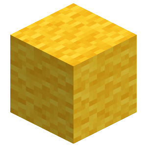


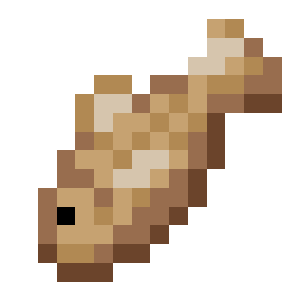
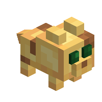
White Cat Plushie

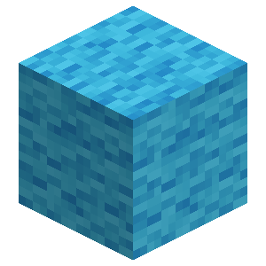
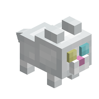
Tabby Cat Plushie
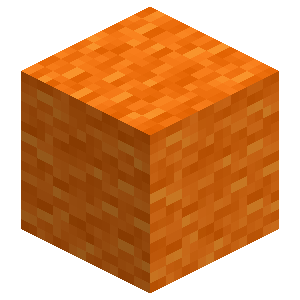
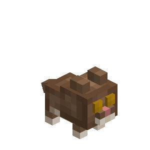
Tuxedo Cat Plushie

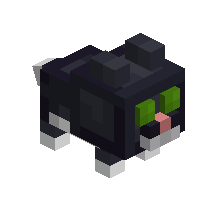
Red Cat Plushie
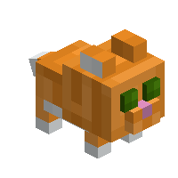
Siamese Cat Plushie
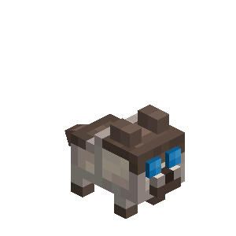
British Shorthair Cat Plushie

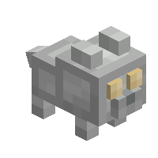
Calico Cat Plushie
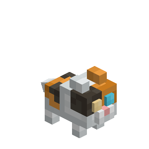
Persian Cat Plushie
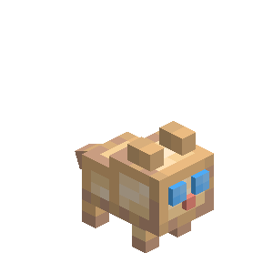
Ragdoll Cat Plushie
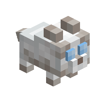
Black Cat Plushie
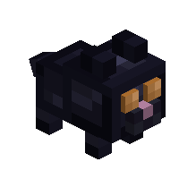
Jellie Cat Plushie

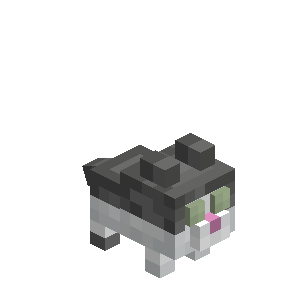
Cat Plushie
Standing
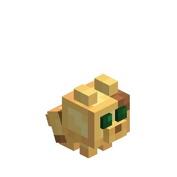
Sitting
| Renewable | Yes (Crafting) |
| Stackable | Yes (64) |
| Tool | Any tool |
| Blast Resistance | 0.2 |
| Hardness | 0.2 |
| Luminous | No |
| Transparent | No |
| Catches fire from lava | Yes |